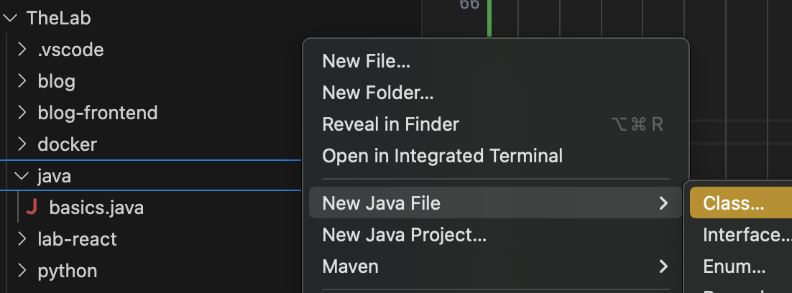
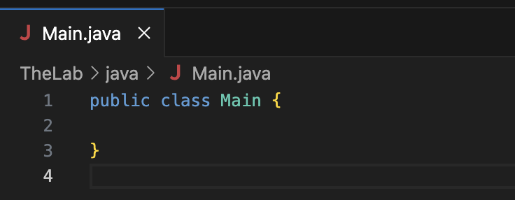
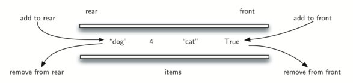
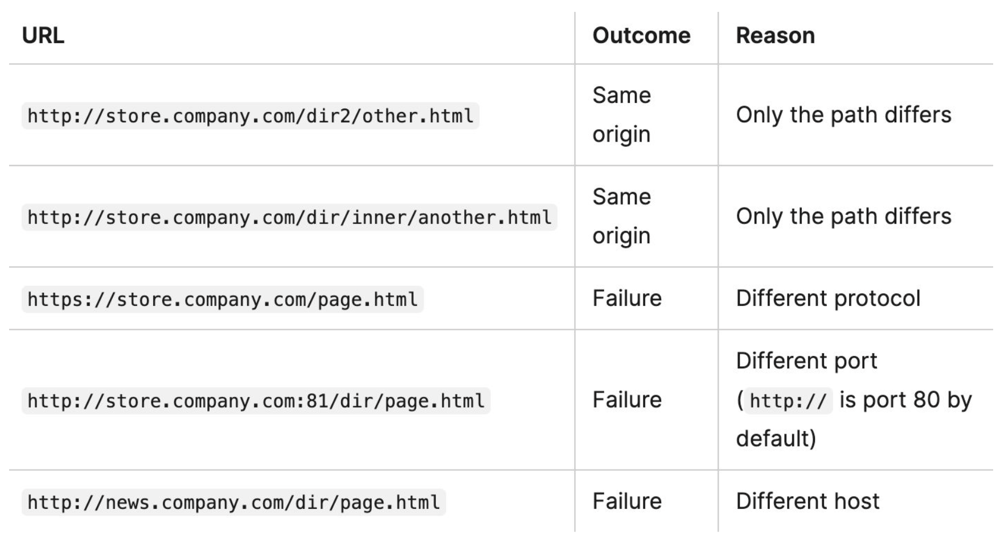
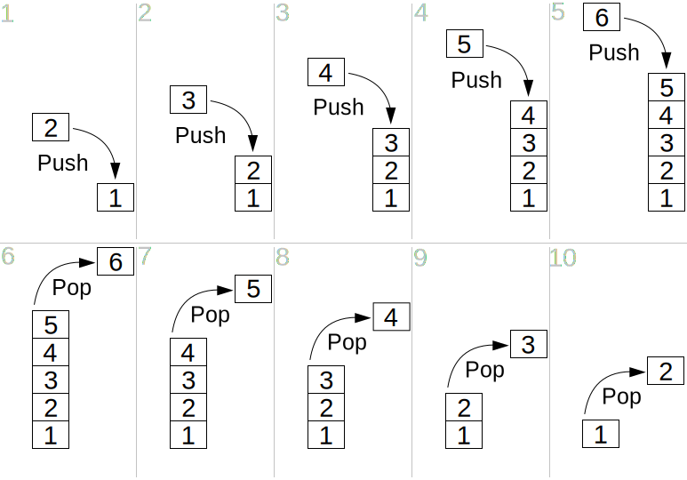

I said that?
Some things I wrote
Some things I wrote
July 20th, 2024
I have only ever heard negative things about Java from other developers. But when I look at the most on-demand languages in my area, Java was the undeniable top language to know. After some deliberation I decided to begin learning the language to form my own opinion. In this post, I will cover how to set up your environment so you can program using the Java language.
First, you will need to set up your environment. I am using VS Code as my code editor, so my directions will cater to that IDE (Integrated Development Environment). I installed the Extension Pack for Java extension and the Adoptium JDK (Java Development Kit).
The first thing I found cool about Java was that you can create a new class by right-clicking a folder in the explorer interface as pictured below. If you don't know what I mean by class, it is something that you would usually have to write out as needed after creating the file to write on. I will get more specific later on.
Once you click on "Class...", a small input box will show up askin you to name the class. The naming convention for the piece of code that encompasses the project is to call it Main. so your new file should look like this:
Now, we can start coding!
July 16th, 2024
As I was developing my brand, I came across this short, resource-backed paper explaining how to choose colorblind-safe color palettes for design and development: Colorblind Safe Color Schemes. I wanted to read more about it, and ended up with a collection of knowledge and tools that I found illuminating and will employ in my efforts to maintain accessibility.
The most important thing to keep in mind is that color should not be the only way that you are sending a message across because some people won't perceive that color variation. This turned out to be a fascinating topic blending science, biology, and philosophy, as it makes me ponder how individualistic our perceptions can be from one another, even beyond the perception of color.
Fun fact from Enchroma: Babies Are Born Color Blind. As babies grow, their color vision improves and is typically fully developed by the age of 6 months. Overall color discrimination capability reaches its peak by age 20, and then starts to decline again.
July 15th, 2024
It was a struggle to maintain a healthy work-life balance for a long time. The self-imposed demands of coding, networking, and learning, combined with the challenges of managing health symptoms, often left me overwhelmed and exhausted. But that is because I didn't know how to rest. In the past, idle time meant there was something I wasn't doing, and what I thought was rest equated to bed-rotting and doom-scrolling. I knew there was more to the problem, so I started researching different kinds of rest. I learned that rest isn't just a luxury, but a necessity, and it’s equally important to match up the recharge activity with the activity you are resting from. Over the course of this week, I will post more specifically about which activities would help mitigate burnout and brain fog.
June 28th, 2024
The Fetch API is a more modern and powerful alternative to the XMLHttpRequest API for making HTTP requests in JavaScript. It provides a simpler and cleaner syntax, better error handling with Promises, and support for advanced features like Request and Response objects. However, the choice between the two APIs depends on the specific requirements of your project and the browsers you need to support. Here are some key differences between them.
June 27th, 2024
The XMLHttpRequest API is a JavaScript API that allows web developers to send HTTP requests to a server and receive data in response without having to reload the entire page. It is commonly used in the development of dynamic web applications as a versatile tool because it allows you to interact with servers and fetch data from URLs in the background without having to do a full page refresh. With this method, the webpage can be updated without disrupting the user experience.
June 26th, 2024
Host JavaScript objects vary because some that may be available in one environment may or may not be present in another, hence the name "host" objects. For example, most browsers offer window objects and navigator objects, but these objects are not in the server running node.js. Some objects, however, are available in both browsers and the node.js servers, like the console object. Therefore, we can say that the host objects are host-specific and may differ from one host (environment) to another.
June 25th, 2024
Native JavaScript objects are objects original to the JavaScript language. These objects can be used regardless of the environment you are building in, and their behavior stays consistent across machines. They are also known as built-in objects, pre-defined objects, or global objects. Native objects can be constructors, which allow you to create new objects with the same underlying functionalities, and native objects can also be used as primitive values, which are not considered "objects" in the regular sense because they have no methods or properties and instead function as data.
June 24th, 2024
A dequeue is also known as a double-ended queue. It is a data structure where the collection of elements can be added or removed from both ends. The ends of the queue are refered to as the FRONT and the REAR.
One use case for a dequeue is a ticket purchasing line, where people can queue up for a ticket and continue with their purchase or decide to cancel before it is their turn in the queue.
June 5th, 2024
JSONP can be unsafe and has some security implications. As JSONP is really JavaScript, it can do everything else JavaScript can do, so you need to trust the provider of the JSONP data. These days, CORS is the recommended approach and JSONP is seen as a hack.
June 4th, 2024
Destructuring is a way of extracting values of Objects or Arrays and placing them into distinct variables.
May 31st, 2024
The word retina is just a marketing term to refer to high resolution screens with a pixel ratio bigger than 1.
It means these displays are emulating a lower resolution screen in order to show elements with the same size.
All mobile devices have retina-defacto displays.
By default, browsers render DOM elements according to the device resolution, except for images.
In order to have crisp, good-looking graphics that make the best of retina displays we need to use high resolution images whenever possible.
However, using always the highest resolution images will have an impact on performance as more bytes will need to be sent over the wire.
To overcome this problem, we can use responsive images, as specified in HTML5.
Making available different resolution files of the same image to the browser will let it decide which image is best. To do this, we can use the html attribute srcset and optionally, sizes. For instance:
May 30th, 2024
The value of this gets set at the time of the function creation and can't change after that. Because of that, when the constructor is used to create a new object, this will always refer to that object. In normal functions the value of this can be changed, but in arrow functions the context always stays the same. So you don't have to worry about the context changing, even if you use your arrow function in different parts of your application.
May 26th, 2024
The same-origin policy prevents JavaScript from making requests across domain boundaries. An origin is defined as a combination of URI scheme, hostname, and port number. This policy prevents a malicious script on one page from obtaining access to sensitive data on another web page through that page's DOM (Document Object M). To get around this, you should use CORS (Cross-origin resource sharing) to allow cross-origin access. CORS is a part of HTTP that lets servers specify any other hosts from which a browser should permit the loading of content.
let,var, and constMay 24th, 2024
Variables declared using the var keyword are scoped to the function in which they are created. If the variable is created outside of any function, it is scoped to the global object.
let and const are block scoped, meaning they are only accessible within the nearest set of curly braces (function, if-else block, or for-loop).
var allows variables to be hoisted, meaning they can be referenced in code before they are declared. let and const will not allow this, instead throwing an error.
Re-declaring a variable with var will not throw an error, but let and const will.
let and const differ in that let allows reassigning the variable's value while const does not.
April 26th, 2024
The event loop is a single-threaded loop that monitors the call stack of a project as the code is read and checks if there is any work to be done in the task queue. On each cycle of the event loop, it takes on whatever is on the top of the call stack, and whatever is next on the task queue gets pushed into the event loop in order to execute.
April 23rd, 2024
As the name suggests, data types using a linear structure arrange a collection of elements in a line, where individual elements can be accessed based on where they are in comparison to the rest of the elements. Think of a book, where the page number is the index, and the content of the page doesn't necessarily have to correspond to the next, but they are still organized in a sequence.
April 22nd, 2024
If you are experiencing neurotic patterns as a result of an emotionally deprived and traumatic childhood, you should understand that it's not your fault. They're survival strategies you developed to cope with difficult situations. It's important to be kind to yourself and recognize that many others have been through similar struggles.
You're not alone in this, and you're definitely not flawed or unworthy because of it. It's all about understanding where these patterns come from and giving yourself the support you need to heal. Consider seeking professional help or talking to someone you trust about what you're going through. Healing takes time, but with self-reflection, support, and nurturing relationships, you can overcome these challenges and emerge stronger than ever. You've got this!
April 21st, 2024
You led me on a dance, a waltz of false affection, Each step we took together, fueled my deep connection. But behind your words lay an avoidant's reflection.
Your breadcrumbs led me on a journey of delusion, A maze of false hope, a twisted, cruel illusion.
I watered those seeds with tears of devotion, But you, like a drought, withheld your emotion. Your avoidance a shield, protecting your heart's core, Leaving me stranded, longing for more.
I built castles in the air, with bricks of expectation, Dreaming of a future, built on our foundation. But you were a ghost, haunting my desires, Leaving me stranded amidst my burning fires.
I'm tired of your games, your manipulative art, Of being the puppet, dancing to your heart.
So now I stand here, weary and worn, A heart once tender, now battered and torn. I release the thought of you, and set you free to roam, I deserve a love that’s real, a love that calls me home. No longer entangled in your web of deceit, I walk away, whole again, in my own beat. And though you may linger, in the shadows, still, I have found my light, my strength, my will.
April 20th, 2024
April 19th, 2024
A stack is a collection of elements that can only be accessed from the beginning or end of the collection. Picture a stack of pancakes, where you can either add a pancake (push), or take a pancake (pop). This method of accessing elements is called LIFO, and stands for Last In, First Out.
A stack is an abstract and linear data type. Abstract data type (ADT) means you don't need to know how the data type keeps track of the elements. In these cases, the inner workings are abstracted from your knowledge. This is the same across different languages when it comes to ADT. Whether you use arrays in JavaScript or lists in C#, they both store elements and have methods that you can use to access them.
A stack can perform three fundamental operations:
TOP=MAX–1 to check if the stack is filled and no more insertions are possible. An OVERFLOW message is printed if an attempt is made to put a value into an existing stack.TOP=NULLto check if the stack is empty and no further deletions are permitted. An UNDERFLOW notice is produced if an attempt is made to erase a value from a stack that is already empty.TOP = NULL, then an appropriate message is written. Otherwise, a value is returned.April 18th, 2024
Named for the nearby constellation Lyra, the Lyrid meteor shower is composed of pieces of debris from the Comet C/1861 G1 Thatcher. A.E. Thatcher was an amateur astronomer living in New York when he discovered the comet in 1861. The meteor shower itself has been observed for 2,700 years ever since the first recorded sighting was made by the Chinese in 687 BC.
This year, the peak of this meteor shower falls on April 21-22. If you are in the northern hemisphere and want to catch it, head away from the city lights and find a section of dark skies. The best visibility will be after moonset and before dawn. Lie flat on your back with your feet facing East and looking up. Wait for your eyes to adjust to the dark (30 minutes) and you should begin to see meteors.